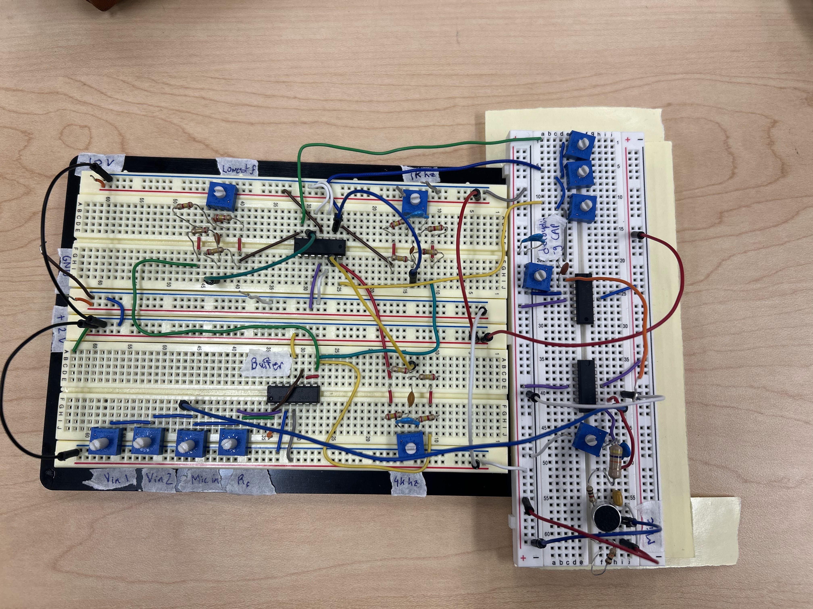

EE 233
Built an analog audio mixer and amplifier circuit in LTSpice and on breadboard. Learned about the frequency response of different filter types, and how to design and analyze circuits using Bode plots. Integrated speaker and microphone into the circuit to create a tunable audio system.

EE 271
Designed and implemented digital logic circuits using System Verilog. Learned about the fundamentals of digital design, including combinational and sequential logic, and how to simulate and test circuits using industry-standard tools. Developed skills in hardware description languages and integrated circuits.